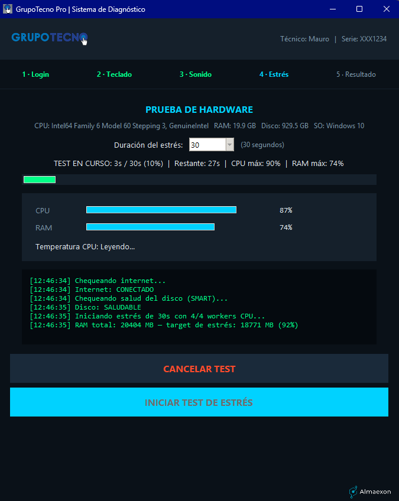
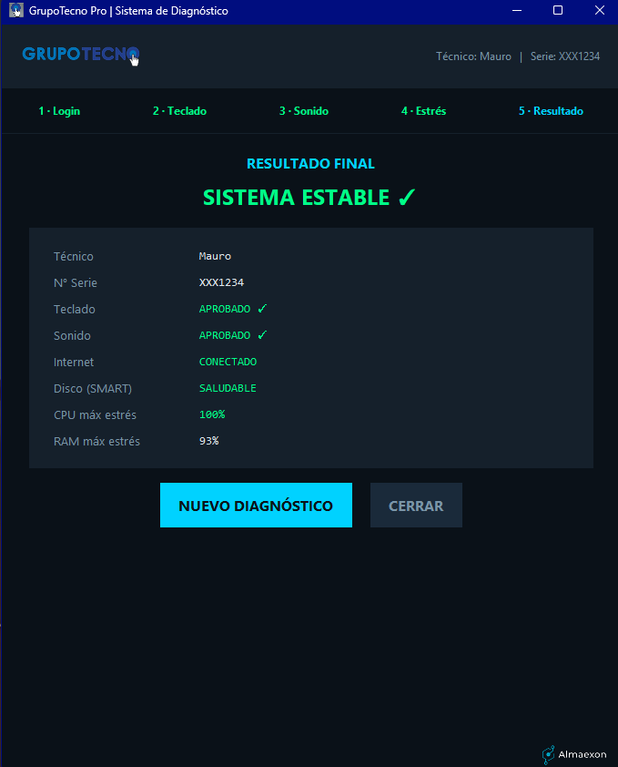

TechScan PRO es un sistema completo para técnicos de soporte informático. Permite ejecutar diagnósticos de hardware desde un simple pendrive, sin instalar nada en la PC del cliente. Los resultados se envían a un servidor central accesible vía web, donde supervisores y administrativos pueden visualizar el estado de los equipos, gestionar técnicos y llevar un historial permanente.
🚀 ¿Qué lo hace diferente?
- Portabilidad total: el cliente es un único
.exeque se ejecuta desde un pendrive. No deja rastros en la PC diagnosticada. - Servidor central liviano: corre en cualquier PC de la red (Ubuntu o Windows) con Python y Flask. No requiere bases de datos complejas.
- Dashboard web en tiempo real: muestra equipos activos, estado de diagnóstico, historial por número de serie, y permite gestionar técnicos.
- Autenticación segura: técnicos con usuario y contraseña (hash PBKDF2). El administrador puede resetear claves desde el panel.
- Reportes persistentes: cada diagnóstico se guarda en CSV con timestamp, técnico, resultados y observaciones.
⚙️ ¿Cómo funciona?
Cliente portable: se ejecuta en Windows 10/11, no requiere instalación. Realiza pruebas de estrés de CPU/RAM, verificación de disco (SMART), test de red y recolección de datos del sistema (serial, modelo, BIOS).
Servidor central: recibe heartbeats y reportes, y sirve un panel web accesible desde cualquier navegador. Los técnicos inician sesión desde el propio cliente.
Almacenamiento: archivos CSV y JSON (fáciles de respaldar, auditar o exportar).
Interfaz mostrando pruebas de CPU y RAM en tiempo real.

Reporte detallado con diagnóstico y recomendaciones.

🎯 Personalización para cada empresa
Cada organización tiene su propia identidad. Por eso TechScan PRO se adapta totalmente a tu marca:
- Podemos reemplazar logos e íconos por los de tu empresa.
- El cliente .exe puede llevar el nombre que quieras (ej.
Diagnóstico_Rápido_TuEmpresa.exe). - El dashboard web se diseña con tus colores institucionales.
- Las pruebas incluidas pueden ampliarse según tus necesidades (ej. test de GPU, herramientas específicas).
- El sistema puede integrarse con tu sistema de tickets o backend actual.
¿Trabajás en producción de PCs? ¿Tenés tu propio emprendimiento de soporte? Desarrollamos una versión blanca lista para que la uses como herramienta propia.
📋 Funcionalidades clave (versión actual 1.3)
- ✅ Diagnóstico de CPU, RAM, disco (SMART), red y latencia.
- ✅ Recolección de datos del sistema (serial, modelo, BIOS, etc.).
- ✅ Dashboard web con visualización en tiempo real de equipos activos.
- ✅ Historial completo por número de serie del equipo.
- ✅ Gestión de técnicos (alta, baja, reseteo de contraseñas).
- ✅ Reportes en CSV con trazabilidad (fecha, técnico, resultados).
🔒 Seguridad y control
- Las contraseñas se almacenan con hash PBKDF2.
- El administrador tiene una clave maestra para resetear cuentas.
- Los técnicos solo ven los equipos que ellos mismos registran.
- El servidor puede alojarse en una red interna sin exposición a internet.
📬 ¿Querés implementarlo o adaptarlo a tu empresa?
TechScan PRO es ideal para:
- Equipos de soporte técnico interno (áreas de IT).
- Empresas de servicios informáticos que atienden múltiples clientes.
- Laboratorios de hardware y escuelas técnicas.
🚀 Solicitar demo o personalización
Escribinos a proyectos@almaexon.com o por LinkedIn/Instagram. Contanos tu flujo de trabajo y armamos una versión a tu medida.